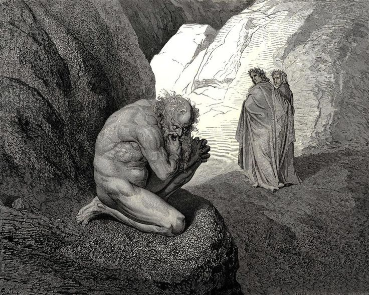

All'ingresso del quarto cerchio, Virgilio mette a tacere il demone Pluto. Qui Dante vede gli Avari e i Prodighi, condannati a spingere enormi macigni col petto in direzioni opposte, scontrandosi e insultandosi eternamente. Virgilio spiega poi il ruolo della Fortuna come ministra divina. Scendendo nel quinto cerchio, i due poeti trovano la palude Stige, dove gli Iracondi si percuotono ferocemente nel fango, mentre gli Accidiosi gemono sommersi, facendo gorgogliare la superficie dell'acqua.
Il demone Flegias traghetta i poeti attraverso la palude Stige. Durante la traversata, l'anima del fiorentino Filippo Argenti tenta di aggredire Dante, ma viene respinta con disprezzo. Giunti davanti alle mura della Città di Dite, che segna l'ingresso al Basso Inferno, una schiera di diavoli sbarra loro il cammino, chiudendo le porte in faccia a Virgilio. Il maestro è turbato e i due rimangono in attesa di un intervento divino, necessario per superare l'ostilità delle forze infernali.
